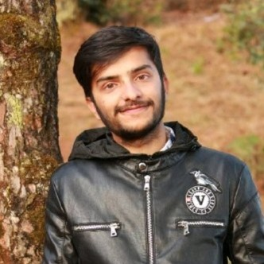

6 Speaker Bios
January Workshops
Hosts

Bishal Bharadwaj
Bishal Bharadwaj is an economic geographer by orientation. Bishal is currently a postdoctoral research fellow at Net Zero Australia, UQ Dow Centre for Sustainable Engineering Innovation, University of Queensland. Bishal is engaged in Hydrogen energy related project at School of Chemical Engineering, UQ.
Bishal has also served as section officer and Undersecretary in civil service of Nepal. Bishal studied MSc Climate Change from UCL, London in 2016 and is about to complete his PhD from University of Queensland. Bishal is interested in evaluating environmental policies to find strategies to make sure environmental policies are effective and the impacts are equitable. For additional information about Bishal, visit www.bishalbharadwaj.com.

Abash Paudel
Abash Paudel has received both his MSc General Forestry and BS Forest Ecology from Tribhuvan University’s Institute of Forestry. He has worked on a variety of projects including the Impact of Climate Variability on Snow Cover in Annaurna Conservation Area. Mr. Paudel is well versed in a variety of geospatial tools including Google Earth Engine and GIS.
Darcy Glenn
Darcy Glenn utilizes climate modeling to provide information to decision-makers about the near-term impacts of climate change as part of Woodwell Climate Research Center’s Risk program. She works with both municipalities and business investors who aim to adapt to the changing climate.
Previously, Darcy worked for two local governments: Park City, Utah and Summit County, Utah. There she had the privilege to work on the “Most Ambitious Climate Goals in North America” allowing her to work on carbon accounting, wildfire adaptation, regenerative agriculture, and electrification policy. She received her MSc in Climate Change from University College London.
Speakers
Rabin Raj Niraula, PhD Dr. Rabin Raj Niraula received his PhD in Water Governance and Climate Change Vulnerability from Kathmandu University. He has made significant contribution in Nepal’s NGO space working for Heifer International and formerly HELVETAS Swiss Intercooperation Nepal.
During Rabin’s talk on Day 2, he offered the following helpful resources for people learning Google Earth Engine.
- https://servir.icimod.org/thematic-focus/water-resources-and-hydro-climatic-disasters/
- https://servir.icimod.org/news/building-better-land-data-in-the-hindu-kush-himalaya/
Additional resources include:
- http://tethys.icimod.org/apps/flashfloodnp/
- https://rds.icimod.org/http://tethys.icimod.org/apps/flashfloodnp/
- https://rds.icimod.org/

Rajesh Kumar Rai, PhD
Dr. Rajesh Rai is the Director at School of Forestry & Natural Resource Management, Institute of Forestry at Tribhuvan University. Rajesh teaches forest economics, sustainable forest management and sustainable financing.
Rajesh has worked in community based forestry programs where he has been involved in valuation of ecosystem services, social benefit-cost analysis, policy research, invasive plant species management, payment for ecosystem services, REDD and Discrete Choice experiments in developing countries.
Rajesh completed MSc in Forestry, and Forest Ecology and Management from University of Eastern Finland, and Albert-Ludwigs-Universität Freiburg im Briesgau. Rajesh received his PhD in Environmental Economics from Deakin University, Australia.
Raja Ram Aryal
Raja Ram Aryal is a PhD candidate at the University of Queensland. He has previous worked for Nepal’s Department of Forest Research and Survey first as a Ranger and then as a Assistant Forest Research Officer. He has worked on landcover classification in Nepal.
During Raja’s talk on Day 4, he offered the following helpful resources.
September Workshops
Hosts
Rajesh Kumar Rai, PhD
Dr. Rajesh Rai is the Director at School of Forestry & Natural Resource Management, Institute of Forestry at Tribhuvan University. Rajesh teaches forest economics, sustainable forest management and sustainable financing.
Rajesh has worked in community based forestry programs where he has been involved in valuation of ecosystem services, social benefit-cost analysis, policy research, invasive plant species management, payment for ecosystem services, REDD and Discrete Choice experiments in developing countries.
Rajesh completed MSc in Forestry, and Forest Ecology and Management from University of Eastern Finland, and Albert-Ludwigs-Universität Freiburg im Briesgau. Rajesh received his PhD in Environmental Economics from Deakin University, Australia.
Bishal Bharadwaj
Bishal Bharadwaj is an economic geographer by orientation. Bishal is currently a postdoctoral research fellow at Net Zero Australia, UQ Dow Centre for Sustainable Engineering Innovation, University of Queensland. Bishal is engaged in Hydrogen energy related project at School of Chemical Engineering, UQ.
Bishal has also served as section officer and Undersecretary in civil service of Nepal. Bishal studied MSc Climate Change from UCL, London in 2016 and is about to complete his PhD from University of Queensland. Bishal is interested in evaluating environmental policies to find strategies to make sure environmental policies are effective and the impacts are equitable. For additional information about Bishal, visit www.bishalbharadwaj.com.

Suman Shree Neupane Suman Shree Neupane is a wildlife and biodiversity conservation researcher. His areas of interest mostly cover quantitative ecology, wildlife management, conservation biology and natural resource economics. In addition to this, he is also a GIS practitioner and interested in ecological and climate change modelling. He love travelling and trekking around remote places in Nepal.
Suman completed my Masters in Wildlife Management and Biodiversity Conservation from School of Forestry and NRM. He graduated from Kathmandu Forestry College with a BSc in Forestry Science. He believes our research is a collective effort to make this planet a better place to live by making an impact on various domains. You can find more about Suman on: Home | Suman Shree Neupane

Dr. David Byrne
Dr. David Byrne uses models, big data analysis, and mathematical tools like machine learning to understand the physical risks that climate change poses to vulnerable communities. He brings to bear his background in mathematics and expertise on sea level rise and storm surge as a member of Woodwell’s risk team.
David earned his doctoral degree in physical oceanography, studying ways of improving real-time forecasts for dangerous storm surges. Since then, he has worked as a coastal ocean scientist at the National Oceanography Center in the UK, conducting coastal modeling, analyzing large datasets, and advocating for scientific best practices. Dr. Byrne is motivated by the desire to help vulnerable communities through transparent and accessible risk modeling.

Darcy Glenn
Darcy Glenn utilizes climate modeling to provide information to decision-makers about the near-term impacts of climate change as part of Woodwell Climate Research Center’s Risk program. She works with both municipalities and business investors who aim to adapt to the changing climate.
Previously, Darcy worked for two local governments: Park City, Utah and Summit County, Utah. There she had the privilege to work on the “Most Ambitious Climate Goals in North America” allowing her to work on carbon accounting, wildfire adaptation, regenerative agriculture, and electrification policy. She received her MSc in Climate Change from University College London.
Speakers

Dr. Buddhi Sagar Poudel
Dr. Poudel is a Joint Secretary and Chief of The Climate Change Management Division of the Ministry of Forests and Environment. He has a PhD from Charles Sturt University, Australia. Dr. Poudel served as a Director General of the Department of Plant Resources; Chief of the REDD Implementation Center; and Secretary of the Ministry of Industry, Tourism, Forests and Environment of the Gandaki Province.

David McGlinchey
David McGlinchey oversees Woodwell Climate Research Center’s partnerships and policy outreach. As a part of his work, he regularly engages congressional climate leaders in Washington, D.C., and has represented the Woodwell Center at UN Climate Change Conferences in Marrakesh, Morocco; Bonn, Germany; and Madrid, Spain. He has also accompanied Woodwell scientists into the field, from a permafrost monitoring station in interior Alaska to the Tanguro research station on the southern edge of the Amazon.
He is a journalist and lawyer, and before joining Woodwell he worked on communications and government relations for global biotechnology company Novozymes. Prior to that, he served as the director of communications and marketing for the Manomet Center for Conservation Sciences.
He serves on the board of the Spatial Informatics Group—Natural Assets Laboratory, and is on the global steering committee of the Nature 4 Climate initiative. He received his undergraduate degree from Wake Forest University, and his law degree from Suffolk University Law School.

Damber Bista
Damber Bista is conservation ecologist by training, with research interest on understanding co-existence between human and wildlife. He brings in experience of over a decade in wildlife conservation. Most of his work is focused on red panda, a habitat specialist of the Himalaya. His work focuses on application-led research on the movement and spatial ecology of the montane mammals. Mr. Bista is currently a PhD candidate at the University of Queensland, where he is studying the red panda’s response to disturbances and habitat fragmentation in the human-dominated landscape.